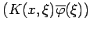
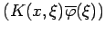
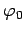
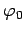

Inhalt Index DeskTop Bronstein

 Lineare Integralgleichungen Volterrasche Integralgleichungen
Lineare Integralgleichungen Volterrasche Integralgleichungen


Gesucht ist die Lösung der Gleichung
für x aus dem Intervall . Numerische Lösungsansätze bestehen darin, das Integral durch eine Quadraturformel zu approximieren:
Das Integrationsintervall und somit die Quadraturformel sind von x abhängig. Das wird durch den Index von zum Ausdruck gebracht. Man erhält als Näherungsausdruck für (11.78)
Die Funktion  ist eine Näherung für die Lösung von (11.78). Die Anzahl und Lage der Stützstellen der Quadraturformel ist von x abhängig, wodurch deren Wahl stark eingeschränkt ist. Ist
ist eine Näherung für die Lösung von (11.78). Die Anzahl und Lage der Stützstellen der Quadraturformel ist von x abhängig, wodurch deren Wahl stark eingeschränkt ist. Ist  eine Stützstelle von , so müssen  und insbesondere bekannt sein. Dies erfordert aber zuvor eine Auswertung der rechten Seite von (11.79b) für
eine Stützstelle von , so müssen  und insbesondere bekannt sein. Dies erfordert aber zuvor eine Auswertung der rechten Seite von (11.79b) für  , was einer Quadratur über dem Intervall entspricht. Aus diesem Grund ist die Verwendung der häufig bevorzugten GAUSSschen Quadraturformeln nicht möglich. Man löst das Problem durch die Wahl von Stützstellen und verwendet Quadraturformeln Q[a,xn] mit Stützstellen . Die Funktionswerte in den Stützstellen werden abkürzend bezeichnet durch Für  erhält man (vgl. Integralgleichungen mit ausgearteten Kernen)
, was einer Quadratur über dem Intervall entspricht. Aus diesem Grund ist die Verwendung der häufig bevorzugten GAUSSschen Quadraturformeln nicht möglich. Man löst das Problem durch die Wahl von Stützstellen und verwendet Quadraturformeln Q[a,xn] mit Stützstellen . Die Funktionswerte in den Stützstellen werden abkürzend bezeichnet durch Für  erhält man (vgl. Integralgleichungen mit ausgearteten Kernen)
und damit:
Dabei hat Q[a,x1] die Stützstellen x0 und x1 und folglich die Gestalt
mit geeigneten Koeffizienten w0 und . Setzt man dieses Verfahren fort, kann man die nacheinander aus der allgemeinen Beziehung
bestimmen. Die Quadraturformeln Q[a,xk] haben folgende Form:
Damit lautet (11.79f):
Die einfachste Quadraturformel ist die linksseitige Rechteckformel. Dabei ist
Man erhält damit das System
Eine etwas genauere Approximation des Integrals gewährleistet die Trapezformel. Die Stützstellen seien zur Vereinfachung äquidistant,
Angewandt auf (11.79f) ergibt das
Die jeweils zu berechnende Größe kommt dabei auch auf der rechten Seite vor. Die Gleichungen sind aber leicht nach den gesuchten Funktionswerten umzustellen.
Hinweis: Mit der angeführten Methode können auch nichtlineare Integralgleichungen näherungsweise gelöst werden. In diesem Fall wird bei Anwendung der Trapezformel zur Bestimmung der jedesmal die Lösung einer nichtlinearen Gleichung erforderlich sein. Dies kann man umgehen, wenn man die Trapezformel nur auf das Intervall [a,xk-1] anwendet und das Intervall [xk-1,xk] mit der linksseitigen Rechteckformel behandelt. Ist h genügend klein, wird dieser Quadraturfehler die Lösung nicht sehr beeinflussen.
| Beispiel | ||||||||||||||||||||||||
|
|